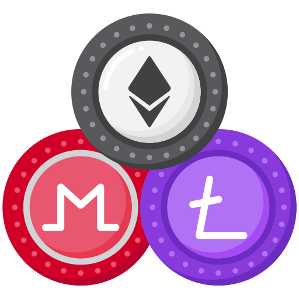

Криптовалюты можно условно разделить на три основных типа: биткоин, альткоины и стейблкоины. Каждая из этих групп имеет свои особенности.
Несмотря на то, что биткоин и альткоины являются видами криптовалют, они не являются деньгами в привычном понимании. Они представляют собой сложный цифровой продукт со своим собственным криптокодом и зашифрованной записью. Чтобы стать деньгами, они проходят сложный процесс преобразования и обработки при помощи особых технологий. Давайте подробнее рассмотрим различные виды криптовалют, их особенности и отличия друг от друга.
Первой и до сих пор лидирующей криптовалютой является биткоин. Она представляет собой глобальную децентрализованную систему электронных платежей, которая позволяет пользователям совершать транзакции между собой без участия посредников, таких как банки или другие финансовые организации. Биткоин часто рассматривается как цифровая замена фиатным валютам и золоту, и по-прежнему остается на первом месте по рыночной капитализации среди всех криптовалют.
Альткоины, которые были созданы после биткоина, представляют все криптовалюты, кроме первой криптовалюты, их доля на рынке криптовалют в 2023 году составляет около 40%.

Стейблкоины — это криптовалюты, чей курс поддерживается определенными активами, например, сильными фиатными валютами (долларом США, евро и т.д.), товарными ценностями (например, золотом) или другими криптовалютами, что уменьшает колебания цены. В 2023 году наиболее популярными стейблкоинами стали Tether и Binance USD.